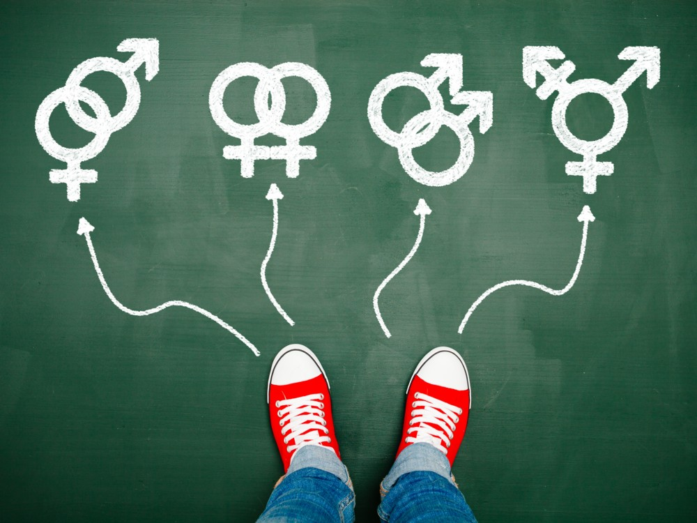

Todo lo que concierne al plano de la sexualidad es todavía visto como un tabú. La sociedad tarta el tema de dorma superficial y rechaza todo aquello que ignora.
Las diversidades sexuales son aquellas que escapan de la sexualidad socialmente aceptada (heterosecualidad, monogamia, relaciones entre personas de la misma edad y clase) y son sujeto de rechazo social, coerción, discriminación y el estigma.

Chistes sobre la orientación sexual y terminos como: "marica", "maricón" o "tortillera" son utilizados como insultos. Este lenguaje priva de expresar libremente la orientación, destroza el autoestima y obliga a vivir con miedo a ser rechazado